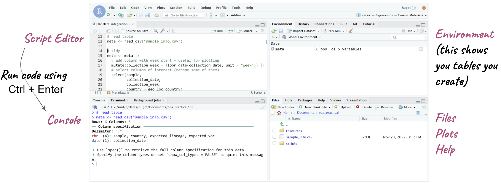
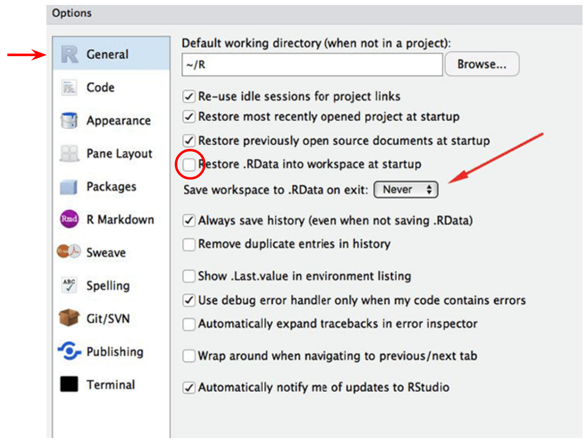
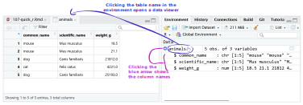
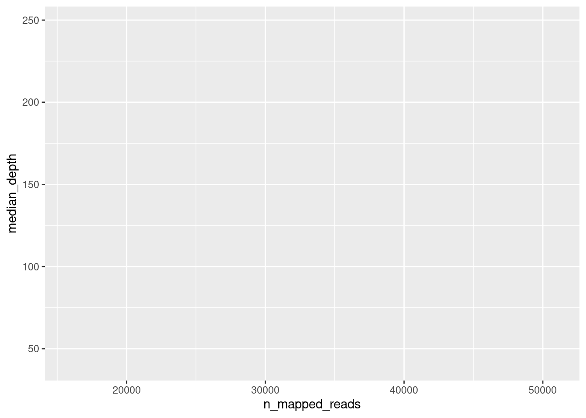
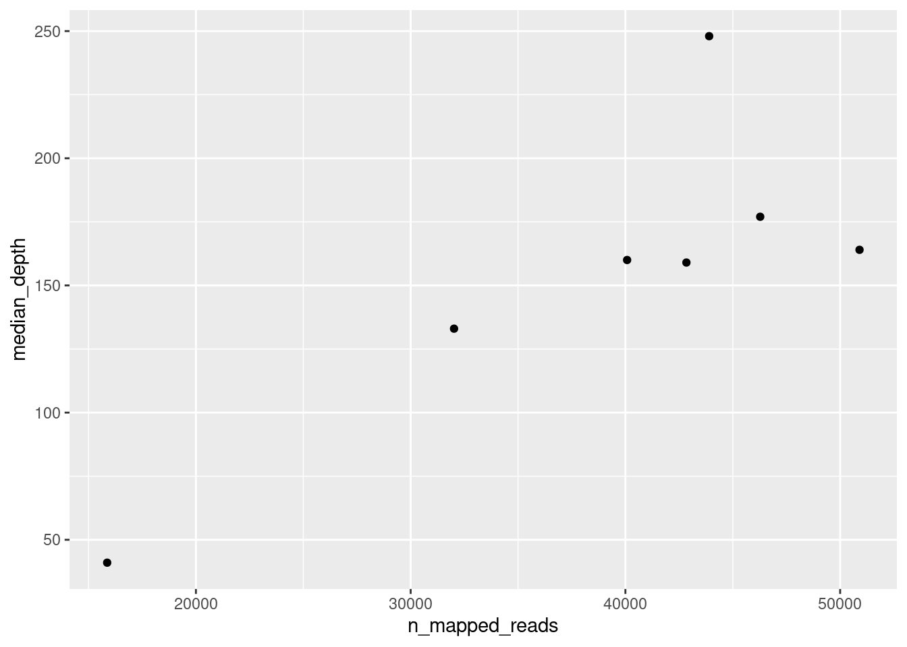
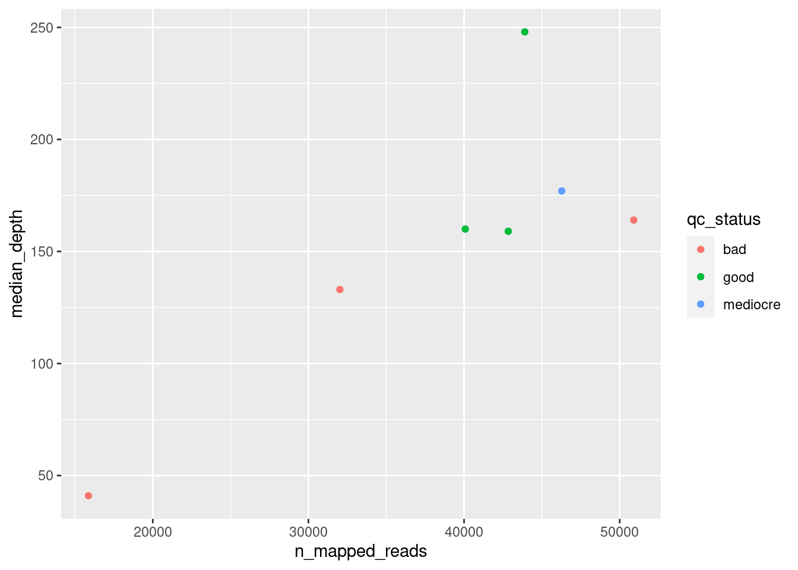
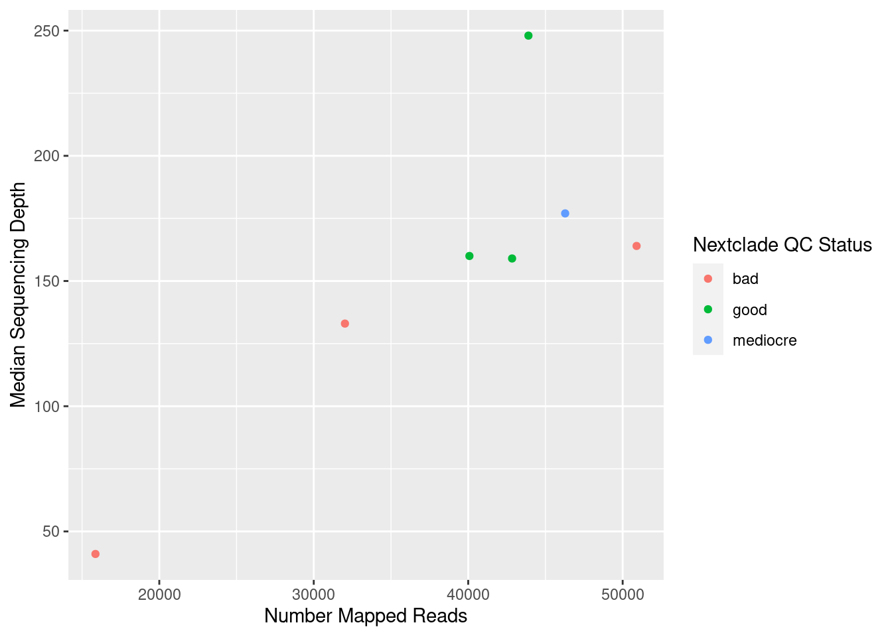

library(tidyverse)R fundamentals
This section gives a (very) quick and brief introduction to R and RStudio. It will not teach you the details of how to program in R, but it should serve as a basis to start you on that journey. R can be used for a range of data analysis applications, including statistics, machine learning, plotting, image analysis, bioinformatics, etc. R is also a programming language, which makes it very flexible. With this flexibility, comes a somewhat steeper learning curve, compared to point-and-click programs. However, in the long run it can really help you improve as a data analyst.
These materials will not teach you the details of how to write your own R programs (we won’t have time for these), but to make you familiar with some of its applications and how to use RStudio to run your code. It’s only the start of your journey into R programming.
If you want to learn more about this topic, we recommend:
- R for Data Science - available as a free e-book.
- Introduction to R/tidyverse - course materials introducing R and the
tidyversepackages.
RStudio
R is the software and programming language itself, but the R interface is quite basic and not very user-friendly. Fortunately, there is a companion piece of software called RStudio, which makes working with R a little bit easier.
There are 4 basic panels in RStudio (see image below):
- The script panel is essentially a text editor, where we can write code and save it as a text file, which in this case, because it contains R code, we call it an R script (but remember, a script is just a text file with some code in it. We’ve been creating shell scripts that run on the command line, here we have some R scripts, which contain R code)
- The console panel is where the code actually runs, or is executed. This is equivalent to the terminal, on the command line. If we want to execute a line of code, then we need to run it on the console.
- One nice feature of RStudio is that we can edit our code on the script panel and then run a line of code from the script on the console - it’s like copy/pasting that line of code from the script to the console. This makes working interactively with RStudio much easier, because we can edit our code in the script and run it as we go along.
- On the top-right we have the Environment panel, which shows us objects that we create, that store information such as tables of data that we read into R.
- Finally, on the bottom-right there are a few tabs: a file browser (allowing us to see files in our computer), a plot display tab (for plots we generate) and a help tab to look at documentation.

Setting RStudio
Before we start working with RStudio, it’s a good idea to change one of its default options. Go to Tools → Global Options… and change the following:

This will tell RStudio to NOT automatically save and load things that we have done in the past. You may think this is a helpful thing, but actually it’s very inconvenient, because if you are doing multiple analysis, it might get very very confusing what the objects that you created are! So, it’s always best to start R with a fresh session, and setting these options makes sure we do this.
Starting a Project
R has a concept called working directory, which is the location on your computer where it is working from (looking for files and folders). You can think of it as the folder that you cd into if you were working on the command-line.
The easiest way to ensure that R is using the correct working directory for our analysis, is to create an R project. In RStudio: File → New Project… → Existing Directory and then click the Browse… button to navigate to the folder where your project files are located.
This will create an .Rproj file on your project folder. Next time you want to work on your analysis, you can simply double-click on this file, and it will open RStudio, with the correct working directory already set for you.
R Basics
This section introduces some of the basic concepts in the R programming language.
Packages/Libraries
R has several extensions to the basic functionality called “packages” or “libraries”. A popular library for data manipulation is called tidyverse, which we are using in this course. Each time we start a new R session, we need to load the libraries we want to use:
If you get an error like Error in library(tidyverse) : there is no package called 'tidyverse', that means that you didn’t install the package. To install packages you can run:
install.packages("tidyverse")You only need to do this the first time you want to use a library. Once it’s installed, you don’t need to run this command again (unless you want to update the library to its latest version – often a good idea!).
Create objects
Create objects (something that contains a value) with <-. For example, the following creates an object called x containing a single number:
x <- 53.341We can print the content of the object by typing its name:
x[1] 53.341Functions
Most of the tasks we can achieve in R are done through the use of functions. We can think of functions as mini-programs that take an input and give an output.
Functions are easy to identify, because they are always followed by parenthesis. Inside the parenthesis we include the inputs to the function.
round(x) # round the the value of x[1] 53Functions have options that can change their behaviour. Separate options using a comma:
round(x, digits = 1) # round to one decimal point[1] 53.3Vector
A vector is the most basic type of object in R. It is a collection of values, which are all of the same type, for example numeric, character or logical (TRUE/FALSE).
x_chr <- c("dog", "cat", "goldfish") # character vector
x_num <- c(1, 5, 23.3, 55.2) # numeric vector
x_log <- c(TRUE, TRUE, FALSE, TRUE) # logical vectorAccess values inside the vector with []:
x_chr[2] # the second value[1] "cat"x_chr[c(2, 3)] # the second and third values[1] "cat" "goldfish"Conditions
In many situations (for example to filter rows in a table), it’s useful to evaluate a set of conditions. We can create logical vectors using conditions:
x_num[1] 1.0 5.0 23.3 55.2# is x_num greater than 20?
x_num > 20[1] FALSE FALSE TRUE TRUE# is x_num equal to 5?
x_num == 5[1] FALSE TRUE FALSE FALSE# is x_num contained the vector on the right?
x_num %in% c(20, 30, 1)[1] TRUE FALSE FALSE FALSECombine conditions with & (AND) and | (OR):
x_num[1] 1.0 5.0 23.3 55.2# is x_num greater than or equal to 10 AND smaller than or equal to 30?
x_num >= 10 & x_num <= 30[1] FALSE FALSE TRUE FALSE# is x_num smaller than 10 OR greater than 30?
x_num < 10 | x_num > 30[1] TRUE TRUE FALSE TRUETo set the filtering conditions, several relational operators can be used:
==is equal to!=is different from%in%is contained in>is greater than>=is greater than or equal to<is less than<=is less than or equal to
It is also possible to combine several conditions together using the following logical operators:
&AND|OR
Missing Values
Sometimes we have missing values in our data, which are encoded as NA:
y <- c(23, 44, NA, 212)We need to ensure these are dealt with properly
# returns NA
mean(y)[1] NA# removes NA and then calculates mean
mean(y, na.rm = TRUE)[1] 93The is.na() function is important to deal with missing values:
y[1] 23 44 NA 212# create a logical that is true if value is missing
is.na(y)[1] FALSE FALSE TRUE FALSE# Negate that expression using !
!is.na(y)[1] TRUE TRUE FALSE TRUETables: data.frame/tibble
Tables in R are called data.frame. The tidyverse package has its own version of a data.frame called a tibble. For the most part they are basically equivalent, but the tibble object has a nicer printing function to display our data on the console.
As an example for working with tables in R, let’s read a TSV (tab-delimited) file that contains intervals of missing information in 5 SARS-CoV-2 consensus sequences (this data comes from the Switzerland case study). To import a TSV file into R as a data.frame we can use the function read_tsv() (for a CSV file we would use read_csv()):
missing_intervals <- read_tsv("missing_intervals.tsv")Rows: 132 Columns: 6
── Column specification ────────────────────────────────────────────────────────
Delimiter: "\t"
chr (4): seqID, patternName, pattern, strand
dbl (2): start, end
ℹ Use `spec()` to retrieve the full column specification for this data.
ℹ Specify the column types or set `show_col_types = FALSE` to quiet this message.When we read the table in, we get a message informing us of the column types found. In this case we have character columns containing text (indicated by chr) and numeric columns (indicated by dbl, which refers to the double-precission floating point format that computers use to store numbers).
To see the content of the table you can type the name of the object:
missing_intervals# A tibble: 132 × 6
seqID patternName pattern strand start end
<chr> <chr> <chr> <chr> <dbl> <dbl>
1 CH01 N+ N+ + 1 54
2 CH01 N+ N+ + 1193 1264
3 CH01 N+ N+ + 4143 4322
4 CH01 N+ N+ + 6248 6294
5 CH01 N+ N+ + 7561 7561
6 CH01 N+ N+ + 9243 9311
7 CH01 N+ N+ + 10367 10367
8 CH01 N+ N+ + 11361 11370
9 CH01 N+ N+ + 13599 13613
10 CH01 N+ N+ + 16699 16758
# ℹ 122 more rowsSometimes a more convenient way is to click the name of the table on the environment, which opens a new tab to preview your data.

Data Manipulation
Most of the work you will do in R is with tables of data (data.frame/tibble objects). There are several ways to manipulate tables in R, but we will give a quick overview of the functionality available through the tidyverse collection of packages.
Basic “verbs”
There’s a set of basic functions that can be thought of as “data manipulation verbs”. They are:
mutate()→ add a new column of modify an existing one.select()→ select columns from the table.filter()→ subset the rows from the table that fullfill a certain logical condition.
Here are some examples of each:
# create a new column with the missing interval lengths
mutate(missing_intervals,
length = (end - start) + 1)# A tibble: 132 × 7
seqID patternName pattern strand start end length
<chr> <chr> <chr> <chr> <dbl> <dbl> <dbl>
1 CH01 N+ N+ + 1 54 54
2 CH01 N+ N+ + 1193 1264 72
3 CH01 N+ N+ + 4143 4322 180
4 CH01 N+ N+ + 6248 6294 47
5 CH01 N+ N+ + 7561 7561 1
6 CH01 N+ N+ + 9243 9311 69
7 CH01 N+ N+ + 10367 10367 1
8 CH01 N+ N+ + 11361 11370 10
9 CH01 N+ N+ + 13599 13613 15
10 CH01 N+ N+ + 16699 16758 60
# ℹ 122 more rows# select only a few columns of the table
select(missing_intervals,
seqID, start, end)# A tibble: 132 × 3
seqID start end
<chr> <dbl> <dbl>
1 CH01 1 54
2 CH01 1193 1264
3 CH01 4143 4322
4 CH01 6248 6294
5 CH01 7561 7561
6 CH01 9243 9311
7 CH01 10367 10367
8 CH01 11361 11370
9 CH01 13599 13613
10 CH01 16699 16758
# ℹ 122 more rows# subset the table to include only intervals within the Spike protein
filter(missing_intervals,
start > 21563 & end < 25384)# A tibble: 15 × 6
seqID patternName pattern strand start end
<chr> <chr> <chr> <chr> <dbl> <dbl>
1 CH01 N+ N+ + 21621 21670
2 CH01 N+ N+ + 23480 23507
3 CH02 N+ N+ + 21620 21670
4 CH02 N+ N+ + 23480 23508
5 CH03 N+ N+ + 21621 21670
6 CH03 N+ N+ + 23480 23507
7 CH04 N+ N+ + 21620 21670
8 CH04 N+ N+ + 22240 22240
9 CH04 N+ N+ + 23480 23509
10 CH04 N+ N+ + 24062 24395
11 CH05 N+ N+ + 21620 22530
12 CH05 N+ N+ + 23489 24709
13 CH06 N+ N+ + 21605 22515
14 CH06 N+ N+ + 23474 23525
15 CH06 N+ N+ + 23721 24694Pipes
We can chain multiple commands together using pipes (similarly to pipes in Unix). In R the pipe is represented by |> (or %>%). The way the pipe works is that the output of one function is sent as the input to the next function.
Taking the examples from the previous section, we could chain all those commands like this:
missing_intervals |>
mutate(length = (end - start) + 1) |>
select(seqID, start, end, length)# A tibble: 132 × 4
seqID start end length
<chr> <dbl> <dbl> <dbl>
1 CH01 1 54 54
2 CH01 1193 1264 72
3 CH01 4143 4322 180
4 CH01 6248 6294 47
5 CH01 7561 7561 1
6 CH01 9243 9311 69
7 CH01 10367 10367 1
8 CH01 11361 11370 10
9 CH01 13599 13613 15
10 CH01 16699 16758 60
# ℹ 122 more rowsIf you want to update the missing_intervals table, then you need to use <- at the beggining of the chain of pipes:
missing_intervals <- missing_intervals |>
mutate(length = (end - start) + 1) |>
select(seqID, start, end, length)Grouped Summaries
We can calculate summaries of the data (e.g. mean, standard deviation, maximum, minimum) per group (e.g. per sample) using a pair of functions together. For example:
# mean and maximum interval length per sample
missing_intervals |>
# for each sample
group_by(seqID) |>
# calculate summary statistics
summarise(max_length = max(length),
min_length = min(length),
mean_length = mean(length))# A tibble: 7 × 4
seqID max_length min_length mean_length
<chr> <dbl> <dbl> <dbl>
1 CH01 238 1 57
2 CH02 274 2 66
3 CH03 279 10 70.4
4 CH04 1011 1 178.
5 CH05 1221 11 200
6 CH06 974 1 166.
7 CH07 5130 1 343. As before, if we wanted to save this result in a new object, we would need to use <-:
intervals_summary <- missing_intervals |>
# for each sample
group_by(seqID) |>
# calculate summary statistics
summarise(max_length = max(length),
min_length = min(length),
mean_length = mean(length)) |>
# and rename the seqID column
rename(sample = seqID)Notice in this case we also renamed the column called seqID to be named sample instead (this will be useful for the exercise later on).
Another useful function is count(), which counts how many times the values in a column appear on a data frame. For example, if we wanted to know how many missing intervals each sample had, we could do it like this:
missing_intervals |>
count(seqID)# A tibble: 7 × 2
seqID n
<chr> <int>
1 CH01 16
2 CH02 19
3 CH03 16
4 CH04 21
5 CH05 15
6 CH06 16
7 CH07 29Joining Tables
We can join multiple tables together based on a common identifier. There are different types of join operations, depending on what we want to achieve.
Take these two tables as an example (these tables come pre-loaded with tidyverse):
band_members# A tibble: 3 × 2
name band
<chr> <chr>
1 Mick Stones
2 John Beatles
3 Paul Beatlesband_instruments# A tibble: 3 × 2
name plays
<chr> <chr>
1 John guitar
2 Paul bass
3 Keith guitarHere are some different ways we can join these tables:
# keep all records from both tables
full_join(band_members, band_instruments, by = "name")# A tibble: 4 × 3
name band plays
<chr> <chr> <chr>
1 Mick Stones <NA>
2 John Beatles guitar
3 Paul Beatles bass
4 Keith <NA> guitar# keep all records from the first table
left_join(band_members, band_instruments, by = "name")# A tibble: 3 × 3
name band plays
<chr> <chr> <chr>
1 Mick Stones <NA>
2 John Beatles guitar
3 Paul Beatles bass # keep all records from the second table
right_join(band_members, band_instruments, by = "name")# A tibble: 3 × 3
name band plays
<chr> <chr> <chr>
1 John Beatles guitar
2 Paul Beatles bass
3 Keith <NA> guitar# keep only the records occurring in both tables
inner_join(band_members, band_instruments, by = "name")# A tibble: 2 × 3
name band plays
<chr> <chr> <chr>
1 John Beatles guitar
2 Paul Beatles bass In each case, if there was no match between the two tables, the cells are filled with missing values NA.
Data Visualisation
For this section, we will use another table, which contains some of the metrics that we can collect from our consensus pipeline:
# read the table
qc_metrics <- read_tsv("consensus_metrics.tsv")Rows: 7 Columns: 6
── Column specification ────────────────────────────────────────────────────────
Delimiter: "\t"
chr (3): sample, qc_status, lineage
dbl (3): n_mapped_reads, median_depth, pct_missing
ℹ Use `spec()` to retrieve the full column specification for this data.
ℹ Specify the column types or set `show_col_types = FALSE` to quiet this message.# preview the table
qc_metrics# A tibble: 7 × 6
sample n_mapped_reads median_depth pct_missing qc_status lineage
<chr> <dbl> <dbl> <dbl> <chr> <chr>
1 CH01 43900 248 3.05 good BA.1
2 CH02 42841 159 4.20 good BA.1
3 CH03 40079 160 3.77 good BA.1
4 CH04 50902 164 12.5 bad BA.1
5 CH05 32020 133 10.0 bad BA.1
6 CH06 46277 177 8.87 mediocre BA.1.1
7 CH07 15867 41 33.2 bad None We can build plots from our tables using the ggplot2 package (which is also part of the tidyverse).
To build a ggplot, we usually need at least three things:
- The data frame we want to use for the plot (the data).
- The columns we want to visualise as our x-axis, y-axis, and colours (these are called aesthetics).
- The type of shape that we want to plot (these are called geometries).
For example, let’s try to make a plot to show the relationship between total number of counts and the median depth of sequencing in these samples:
ggplot(data = qc_metrics, aes(x = n_mapped_reads, y = median_depth))
When we do this, we simply get an empty plot, with x and y axis, but nothing drawn on it. To draw something on the plot, we add (literally with +) geometries to our plot. In this case, we can use the geom_point() geometry, which draws “points” on the plot:
ggplot(data = qc_metrics, aes(x = n_mapped_reads, y = median_depth)) +
geom_point()
There are many geometries available with ggplot:
geom_point()draws points.geom_boxplot()draws a boxplot.geom_histogram()draws a histogram.geom_col()draws a barplot (this one is named a little strangely, but “col” means it draws “columns” or bars).
We can further modify the look to the plot by adding other aesthetics such as the colour of the points. For example, let’s say we wanted to colour our points according to their “QC Status”:
ggplot(data = qc_metrics,
aes(x = n_mapped_reads, y = median_depth, colour = qc_status)) +
geom_point()
Finally, we may sometimes want to change the labels of our plot. In that case, we can add the labs() function to our plotting code:
ggplot(data = qc_metrics,
aes(x = n_mapped_reads, y = median_depth, colour = qc_status)) +
geom_point() +
labs(x = "Number Mapped Reads",
y = "Median Sequencing Depth",
colour = "Nextclade QC Status")